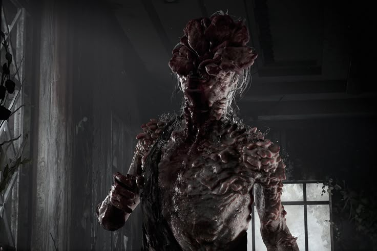

A franquia The Last of Us não é apenas conhecida por sua narrativa envolvente e personagens marcantes — o jogo também possui diversas curiosidades fascinantes que enriquecem ainda mais sua experiência. Entre as curiosidades mais interessantes:
üéôÔ∏è Os diálogos de fundo entre personagens mudam conforme suas a√ß√µes, criando uma sensa√ß√£o mais orgânica de companheirismo.

ü•¨ Os sons dos estaladores foram criados usando frutas e vegetais esmagados, como laranjas e repolhos.
üé¨ O jogo foi totalmente capturado com motion capture, incluindo express√µes faciais, o que contribui para a qualidade cinematográfica.
üß© A mecânica de jogo foi inspirada em jogos como "Ico" e "Shadow of the Colossus", ambos da Team Ico.
üìö O fungo Cordyceps, que causa a infec√ß√£o no jogo, √© inspirado em um fungo real que afeta insetos